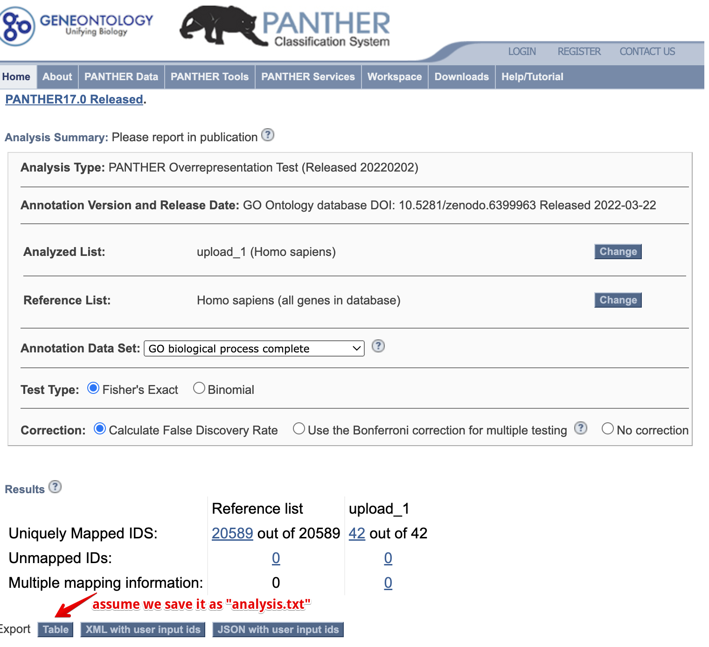
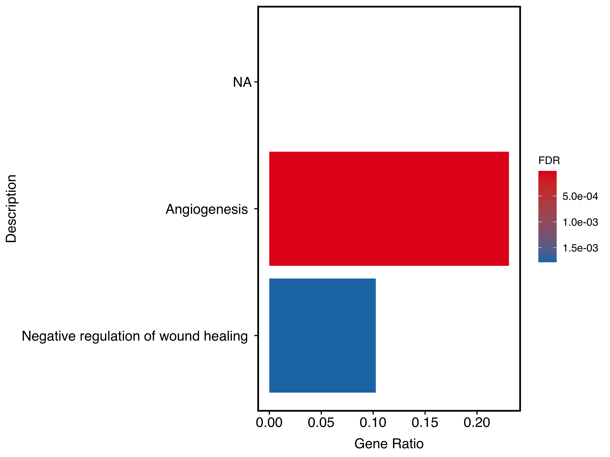
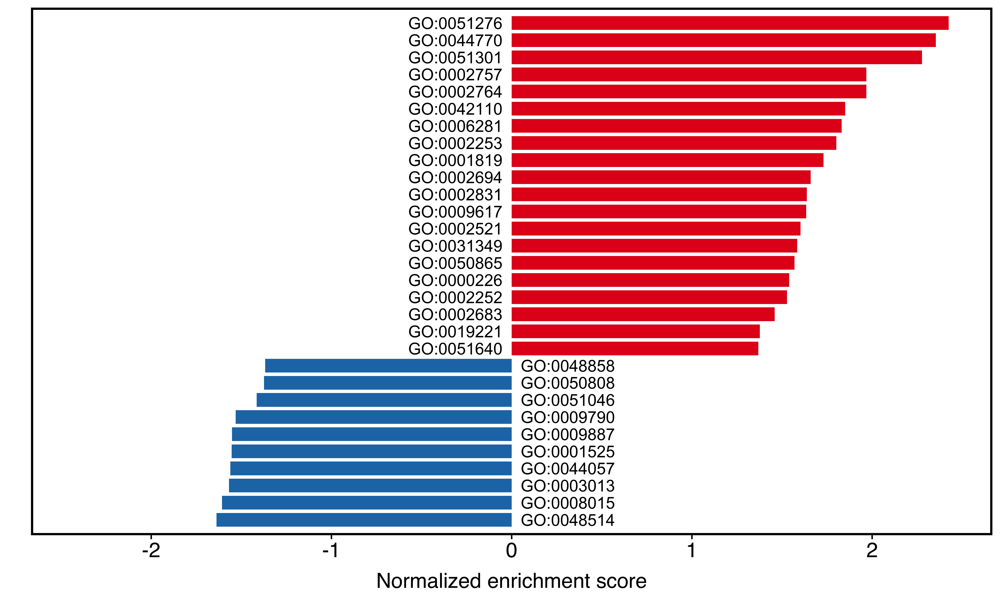
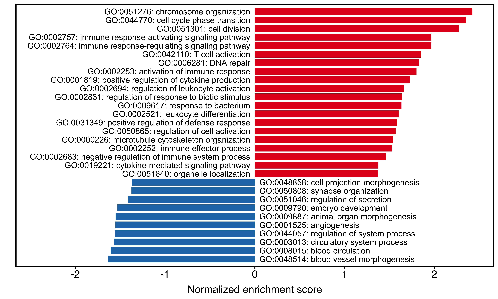
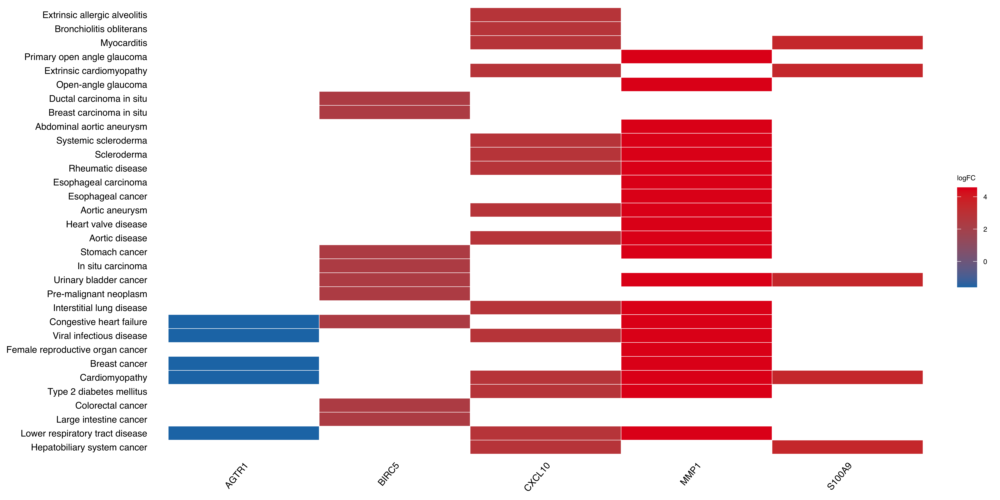

10 Import external data
10.1 Import GO PANTHER
genekitr::importPanther() supports importing PANTHER results from GeneOntology and formatting them as a genORA-style result.

Figure 10.1: Import PANTHER result.
For example, we save the PANTHER result as “analysis.txt” and pass it to importPanther. It will tidy the data and calculate both fold enrichment and rich factor.
panther_res <- importPanther("data/analysis.txt")
head(panther_res, 5)## ID Description
## 1 GO:0038190 VEGF-activated neuropilin signaling pathway
## 2 GO:1902336 positive regulation of retinal ganglion cell axon guidance
## 3 GO:1902669 positive regulation of axon guidance
## 4 GO:0038189 neuropilin signaling pathway
## 5 GO:0090259 regulation of retinal ganglion cell axon guidance
## GeneRatio BgRatio upload_1 (39) upload_1 (expected)
## 1 0.05128205 9.713925e-05 2 0.00
## 2 0.05128205 1.457089e-04 2 0.01
## 3 0.05128205 1.942785e-04 2 0.01
## 4 0.05128205 1.942785e-04 2 0.01
## 5 0.05128205 2.914177e-04 2 0.01
## upload_1 (over/under) FoldEnrich pvalue qvalue Count RichFactor
## 1 + 527.9231 2.08e-05 0.00289 2 9.713925e-05
## 2 + 351.9487 3.47e-05 0.00429 2 9.713925e-05
## 3 + 263.9615 5.20e-05 0.00558 2 9.713925e-05
## 4 + 263.9615 5.20e-05 0.00555 2 9.713925e-05
## 5 + 175.9744 9.68e-05 0.00904 2 9.713925e-05Then, you can select the terms of interest and utilize the plot functions in Chapter 11.
For example:
plotEnrich(panther_res[c(50,100,350,580,700),],
plot_type = "bar",
stats_metric = "qvalue",
term_metric = "GeneRatio",
main_text_size = 13,
legend_text_size = 10
)
Figure 10.2: Bar plot of PANTHER result.
10.2 Import clusterProfiler object
clusterProfiler is a popular R package for enrichment analysis. However, it requires users to have some programming skills to work with its S4 object, which can be inconvenient for data cleaning and visualization.
Here, genekitr::importCP() can easily import the S4 object along with additional attributes (e.g. FoldEnrich, RichFactor) to help users interact with the data more fluently.
10.2.1 clusterProfiler ORA-GO result
## example data
library(clusterProfiler)
library(org.Hs.eg.db)
data(geneList, package="DOSE")
gene <- names(geneList)[abs(geneList) > 2]
## GO result from clusterProfiler
go <- enrichGO(gene = gene,
OrgDb = org.Hs.eg.db,
ont = "BP",
pAdjustMethod = "BH",
pvalueCutoff = 0.01,
qvalueCutoff = 0.05)
isS4(go) # return a S4 object## [1] TRUE
## import
go_easy <- importCP(go, type = "go")
is.data.frame(go_easy)## [1] TRUE
# keep the same as the original result
identical(as.data.frame(go)[,1], go_easy[,1])## [1] TRUE
head(go_easy)## hs_BP_ID Description GeneRatio BgRatio
## GO:0140014 GO:0140014 mitotic nuclear division 0.1597938 281/18842
## GO:0000819 GO:0000819 sister chromatid segregation 0.1443299 246/18842
## GO:0000070 GO:0000070 mitotic sister chromatid segregation 0.1340206 205/18842
## GO:0000280 GO:0000280 nuclear division 0.1752577 422/18842
## GO:0098813 GO:0098813 nuclear chromosome segregation 0.1546392 315/18842
## GO:0048285 GO:0048285 organelle fission 0.1804124 470/18842
## RichFactor FoldEnrich oddsRatio zScore pvalue p.adjust
## GO:0140014 0.11032028 10.714715 13.996025 16.73475 4.284365e-23 1.112649e-19
## GO:0000819 0.11382114 11.054731 14.259976 16.19068 2.685791e-21 3.487500e-18
## GO:0000070 0.12682927 12.318129 15.968143 16.61882 4.816258e-21 4.169274e-18
## GO:0000280 0.08056872 7.825133 10.000644 14.46303 7.860359e-21 5.103338e-18
## GO:0098813 0.09523810 9.249877 11.786264 15.06041 1.637706e-20 8.506247e-18
## GO:0048285 0.07446809 7.232617 9.216439 13.95654 2.566328e-20 1.110792e-17
## qvalue
## GO:0140014 9.923441e-21
## GO:0000819 3.110414e-19
## GO:0000070 3.718471e-19
## GO:0000280 4.551539e-19
## GO:0098813 7.586507e-19
## GO:0048285 9.906876e-19
## geneID
## GO:0140014 6790/9319/7272/332/991/22974/3833/1062/55143/652/220134/3832/81620/9787/81930/9212/9055/64151/9493/51203/4751/891/1111/27338/11065/4085/24137/10403/983/23397/146909
## GO:0000819 9319/7272/332/7153/991/22974/3833/1062/55143/220134/3832/81620/9787/81930/9212/9055/64151/9493/51203/891/10460/11065/4085/24137/10403/983/23397/146909
## GO:0000070 9319/7272/332/991/22974/3833/1062/55143/220134/3832/81620/9787/81930/9212/9055/64151/9493/51203/891/11065/4085/24137/10403/983/23397/146909
## GO:0000280 6790/9319/7272/332/7153/991/22974/3833/10635/1062/55143/652/220134/3832/81620/9787/81930/9212/9055/64151/9493/51203/4751/891/1111/27338/11065/4085/24137/10403/9232/983/23397/146909
## GO:0098813 9319/7272/332/7153/991/22974/3833/1062/55143/220134/3832/81620/9787/81930/9212/9055/64151/9493/51203/4751/891/10460/11065/4085/24137/10403/9232/983/23397/146909
## GO:0048285 6790/9319/7272/332/7153/991/22974/3833/4137/10635/1062/55143/652/220134/3832/81620/9787/81930/9212/9055/64151/9493/51203/4751/891/1111/27338/11065/4085/24137/10403/9232/983/23397/146909
## geneID_symbol
## GO:0140014 AURKA/TRIP13/TTK/BIRC5/CDC20/TPX2/KIFC1/CENPE/CDCA8/BMP4/SKA1/KIF11/CDT1/DLGAP5/KIF18A/AURKB/PRC1/NCAPG/KIF23/NUSAP1/NEK2/CCNB1/CHEK1/UBE2S/UBE2C/MAD2L1/KIF4A/NDC80/CDK1/NCAPH/KIF18B
## GO:0000819 TRIP13/TTK/BIRC5/TOP2A/CDC20/TPX2/KIFC1/CENPE/CDCA8/SKA1/KIF11/CDT1/DLGAP5/KIF18A/AURKB/PRC1/NCAPG/KIF23/NUSAP1/CCNB1/TACC3/UBE2C/MAD2L1/KIF4A/NDC80/CDK1/NCAPH/KIF18B
## GO:0000070 TRIP13/TTK/BIRC5/CDC20/TPX2/KIFC1/CENPE/CDCA8/SKA1/KIF11/CDT1/DLGAP5/KIF18A/AURKB/PRC1/NCAPG/KIF23/NUSAP1/CCNB1/UBE2C/MAD2L1/KIF4A/NDC80/CDK1/NCAPH/KIF18B
## GO:0000280 AURKA/TRIP13/TTK/BIRC5/TOP2A/CDC20/TPX2/KIFC1/RAD51AP1/CENPE/CDCA8/BMP4/SKA1/KIF11/CDT1/DLGAP5/KIF18A/AURKB/PRC1/NCAPG/KIF23/NUSAP1/NEK2/CCNB1/CHEK1/UBE2S/UBE2C/MAD2L1/KIF4A/NDC80/PTTG1/CDK1/NCAPH/KIF18B
## GO:0098813 TRIP13/TTK/BIRC5/TOP2A/CDC20/TPX2/KIFC1/CENPE/CDCA8/SKA1/KIF11/CDT1/DLGAP5/KIF18A/AURKB/PRC1/NCAPG/KIF23/NUSAP1/NEK2/CCNB1/TACC3/UBE2C/MAD2L1/KIF4A/NDC80/PTTG1/CDK1/NCAPH/KIF18B
## GO:0048285 AURKA/TRIP13/TTK/BIRC5/TOP2A/CDC20/TPX2/KIFC1/MAPT/RAD51AP1/CENPE/CDCA8/BMP4/SKA1/KIF11/CDT1/DLGAP5/KIF18A/AURKB/PRC1/NCAPG/KIF23/NUSAP1/NEK2/CCNB1/CHEK1/UBE2S/UBE2C/MAD2L1/KIF4A/NDC80/PTTG1/CDK1/NCAPH/KIF18B
## Count
## GO:0140014 31
## GO:0000819 28
## GO:0000070 26
## GO:0000280 34
## GO:0098813 30
## GO:0048285 35Then you can select the terms of interest and utilize the plot functions in Chapter 11.
For example:
plotEnrich(tail(go_easy,20),
plot_type = "genechord",
show_gene = c("UBE2C", "CDC20", "NDC80"),
main_text_size = 10,
legend_text_size = 10
)
Figure 10.3: Chord plot of clusterProfiler result.
10.2.2 clusterProfiler GSEA result
library(org.Hs.eg.db)
data(geneList, package="DOSE")
## GSEA result from clusterProfiler
kk <- gseGO(geneList = geneList,
OrgDb = org.Hs.eg.db,
minGSSize = 400,
pvalueCutoff = 0.01,
eps = 0,
verbose = FALSE)
## import
kk_easy <- importCP(kk,type = 'gsea')
identical(kk@result[,1], kk_easy$gsea_df[,1])## [1] TRUEThen you can select the terms of interest and utilize the plot functions in Chapter 12.
For example:
plotGSEA(kk_easy, plot_type = "bar",
main_text_size = 15)
Figure 10.4: Two-side bar plot of clusterProfiler result.
The IDs in the plot are actually from the ID column in the kk_easy result. If you want to add more content, just modify the ID column:
kk_easy$gsea_df$ID <- paste(kk_easy$gsea_df$ID, kk_easy$gsea_df$Description,sep = ": ")
plotGSEA(kk_easy, plot_type = "bar",
main_text_size = 15)
Figure 10.5: Two-side bar plot after modifying labels.
Alternatively, set label_by = "description" to label the bars with the Description column directly:
plotGSEA(kk_easy, plot_type = "bar", label_by = "description")10.2.3 clusterProfiler KEGG/DOSE/WikiPathways… result
clusterProfiler supports many gene sets, including Disease Ontology (DO), WikiPathways and ReactomePA.
Take DO as an example:
library(DOSE)
data(geneList)
gene <- names(geneList)[abs(geneList) > 1.5]
## ORA-DO result from clusterProfiler
do <- enrichDO(gene = gene,
ont = "HDO",
pvalueCutoff = 0.05,
pAdjustMethod = "BH",
universe = names(geneList),
minGSSize = 5,
maxGSSize = 500,
qvalueCutoff = 0.05)
# import
do_easy <- importCP(do,type = 'other')
identical(as.data.frame(do)[,1], do_easy[,1])## [1] TRUEThen you can select the terms of interest and utilize the plot functions in Chapter 11.
For example:
plotEnrich(do_easy,
plot_type = "geneheat",
fold_change = geneList,
show_gene = c('S100A9','AGTR1','BIRC5','MMP1','CXCL10'))
Figure 10.6: Heatmap of clusterProfiler result.